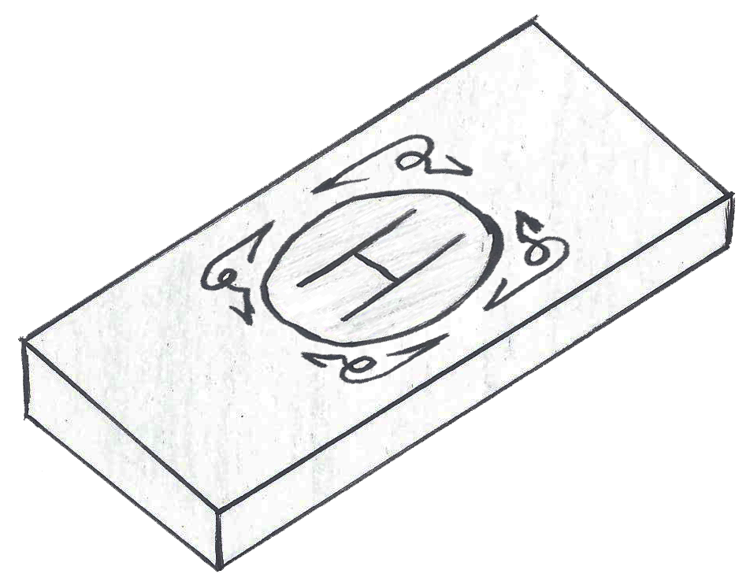

HEILIG
Raridade
Nas Terras Livres do Leste: incomum
Fora das Terras Livres do Leste: raro
Descrição
Mineral próprio da Floresta Curta das Terras do Leste, terreno dos elfos da floresta e ligada a Yggdrasil. Torna as armas santificadas, fazendo-as ter um brilho branco. Conta-se que, quando a Árvore nasceu, todo o aço abaixo de suas raízes tornou-se heilig, o mineral santo.
Ela brilha, azulada com a luz da lua
NAS LENDAS DO CONTINENTE
Dentes e Garras — Capítulo VIII — Insegurança
"— Essa adaga é feita de prata, mithril e heilig. Mais leve, afiada e santa que o aço. — falou o raaksha, guardando-a atenciosamente — É uma arma mágica, igual a sua."
Dentes e Garras — Capítulo XI — Elo
"O presente estava igual como Glen o deixou, preservado a todo custo. Sabia da regra de não se apegar a qualquer objeto, mas aquele era especial; fazia parte de seu ser. O desembainhando, viu a lâmina de heilig brilhar prateada devido à luz do dia. E, mais uma vez, ele pensou em Abigail."